MySimulator 튜토리얼
프로그램 안의 튜토리얼(도움말 › 튜토리얼, 시작 화면의 🎓 단추)은 아래 단계를 실제 화면을 움직이며 보여 줍니다. 이 문서는 같은 단계를 그림과 함께 보여 줍니다.
시작 화면
1. 환영합니다
MySimulator 는 신호 처리 · 동역학과 제어 · 통계와 머신러닝 · 몬테카를로와 최적화를 노드 파이프라인 하나로 묶는 통합 시뮬레이션 도구입니다. 이 튜토리얼은 실제 화면을 움직이며 기능을 하나씩 보여 줍니다. 오른쪽 아래 카드에서 [다음] 을 누르거나 ▶ 로 자동 재생하고, 목록에서 장으로 바로 갈 수 있습니다.
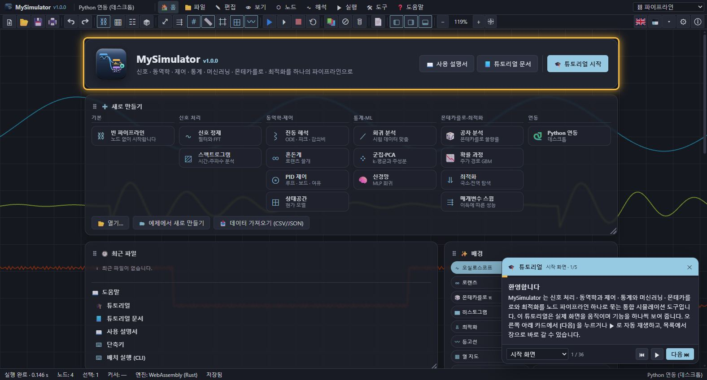
2. 새로 시작하기
빈 파이프라인이나 분야별 예제(신호 정제, 진동, PID, 회귀, 군집, 몬테카를로, 최적화, Python 연동 …)에서 시작합니다. 파일을 열거나 CSV 데이터를 가져올 수도 있습니다.
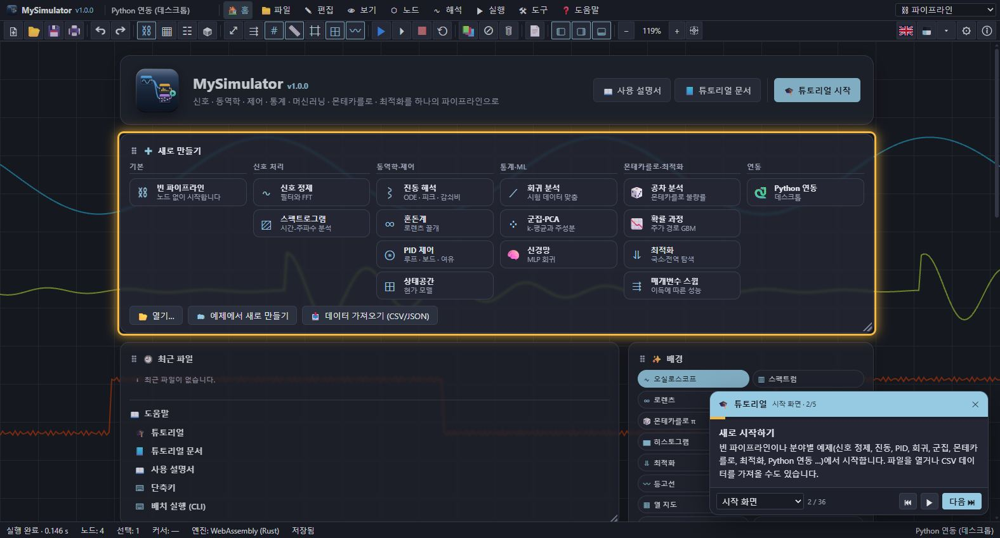
3. 최근 파일과 도움말
최근에 연 파이프라인, 사용 설명서와 튜토리얼 문서, 단축키, 배치 실행 안내가 여기 있습니다.
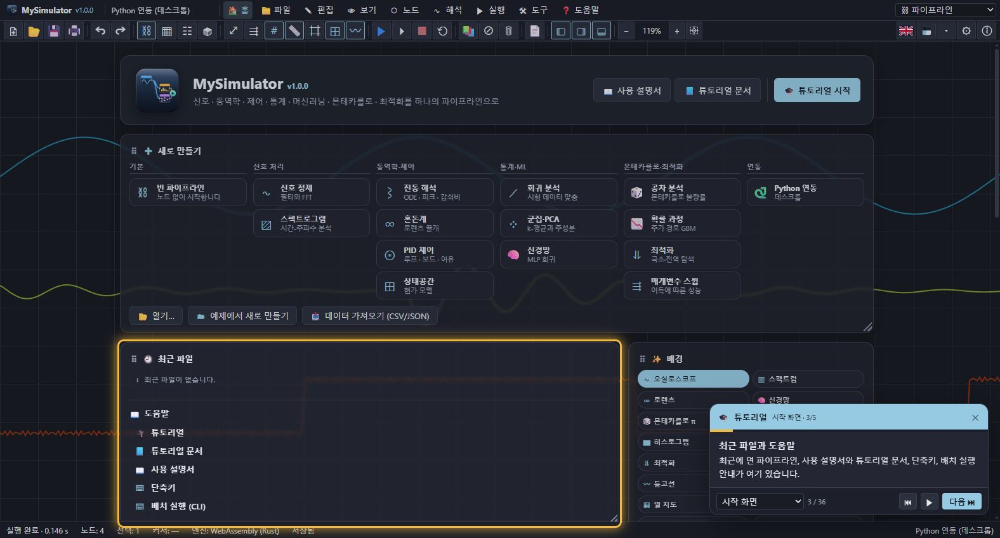
4. 움직이는 배경
오실로스코프, 스펙트럼, 로렌츠 끌개, 신경망, 몬테카를로 π … 시작 화면 배경 20가지를 고르고 속도와 투명도를 바꿉니다.
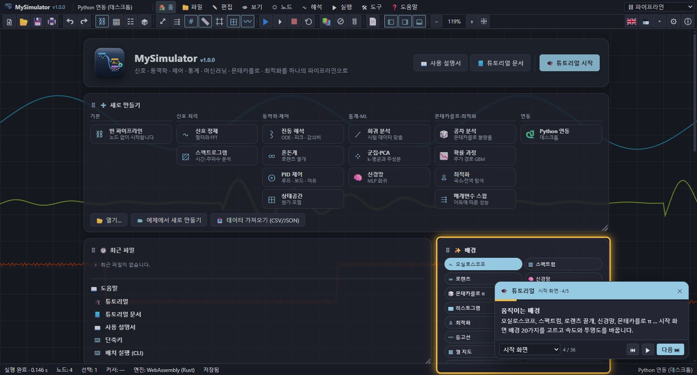
5. 예제 갤러리
예제 카드에는 파이프라인 모양의 미리보기와 분야 태그가 있습니다. 누르면 새 탭에서 열립니다.
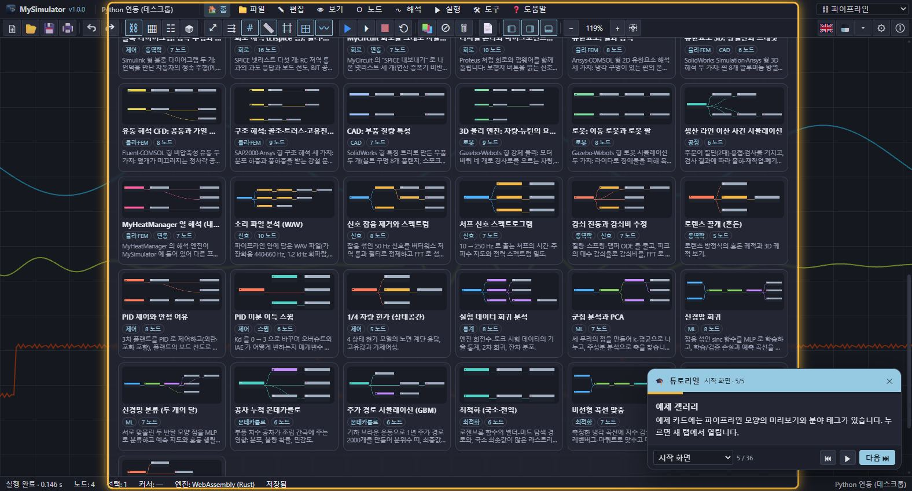
화면 둘러보기
6. 파이프라인 화면
가운데는 노드 그래프입니다. 왼쪽 소스에서 만든 데이터가 연결선을 따라 필터·FFT 를 거쳐 차트와 KPI 로 흐릅니다. 노드 안의 작은 그래프는 마지막 실행 결과의 미리보기입니다.
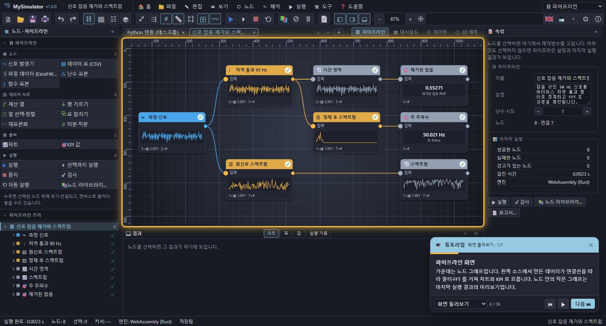
7. 메뉴 막대
파일 · 편집 · 보기 · 노드 · 해석 · 실행 · 도구 · 도움말 메뉴와, 오른쪽의 작업대 선택이 있습니다.
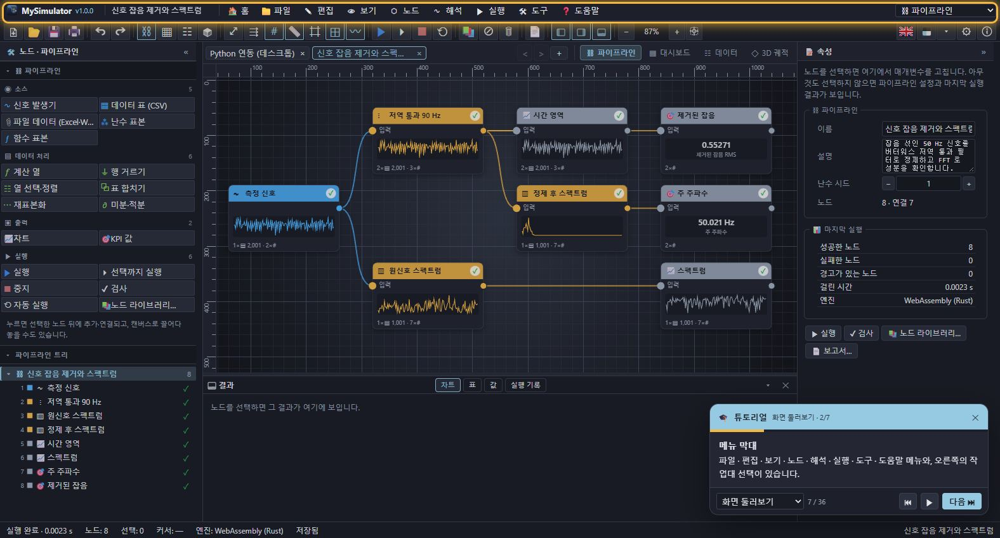
8. 작업대
작업대를 바꾸면 왼쪽 노드 팔레트가 그 분야의 노드로 바뀝니다: 신호 처리, 동역학·제어, 통계·ML, 몬테카를로·최적화, 연동·자동화, 모든 노드.
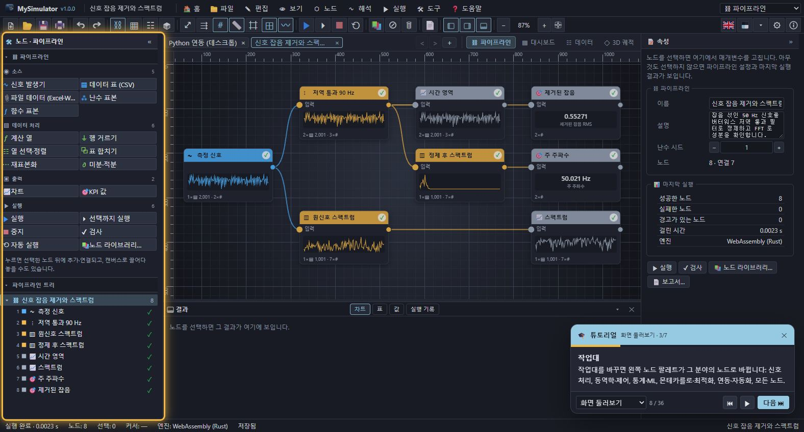
9. 도구 막대
새로 만들기·열기·저장, 실행 취소, 보기 전환(파이프라인·대시보드·데이터·3D), 전체 보기·자동 정렬, 실행·선택까지 실행·중지·자동 실행, 노드 라이브러리, 보고서. 오른쪽 끝에 언어·테마·설정·정보.
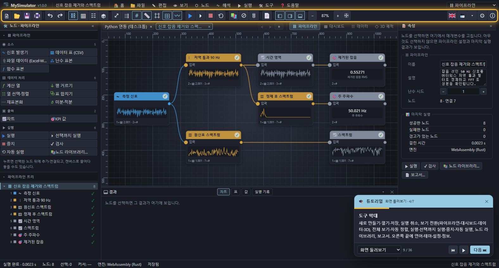
10. 파이프라인 트리
노드를 실행 순서대로 나열하고 상태(✓ 성공, ⚠ 경고, ✕ 오류, ◔ 바뀜)를 보입니다. 누르면 그 노드를 고르고 화면에 보입니다.
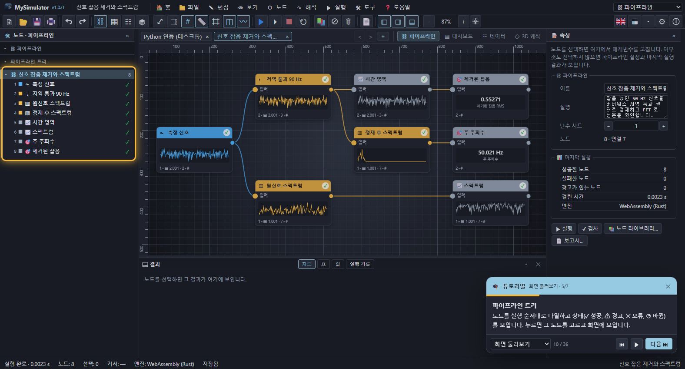
11. 속성 패널
선택한 노드의 이름, 도움말, 프리셋, 매개변수와 결과 값이 보입니다. 열 이름은 앞 노드의 결과에서 고를 수 있습니다.
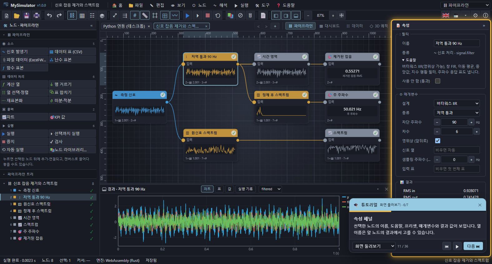
12. 결과 패널
아래 패널에 선택한 노드의 차트 · 표 · 값 · 실행 기록이 있습니다. 차트 위에 마우스를 올리면 값을 읽습니다.
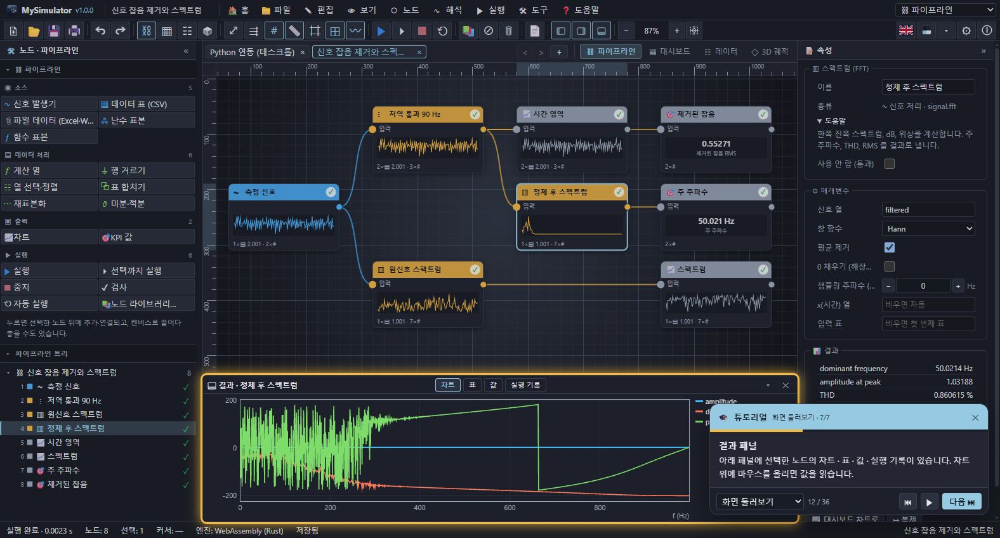
파이프라인 만들기
13. 노드 추가
팔레트의 노드를 누르면 선택한 노드 뒤에 추가되고 자동으로 연결됩니다. 캔버스로 끌어다 놓거나, 빈 곳을 두 번 눌러 노드 라이브러리를 열 수도 있습니다.
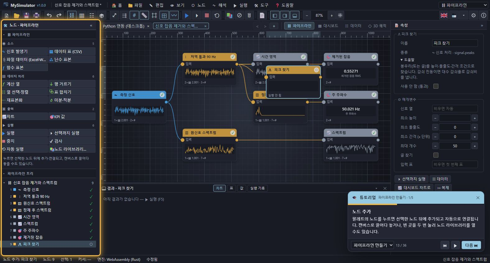
14. 연결하기
노드 오른쪽 출력 포트에서 다른 노드의 입력 포트로 끌면 연결됩니다. 연결된 입력 포트를 끌어내면 연결을 옮기거나 지웁니다. 순환 연결은 막힙니다.
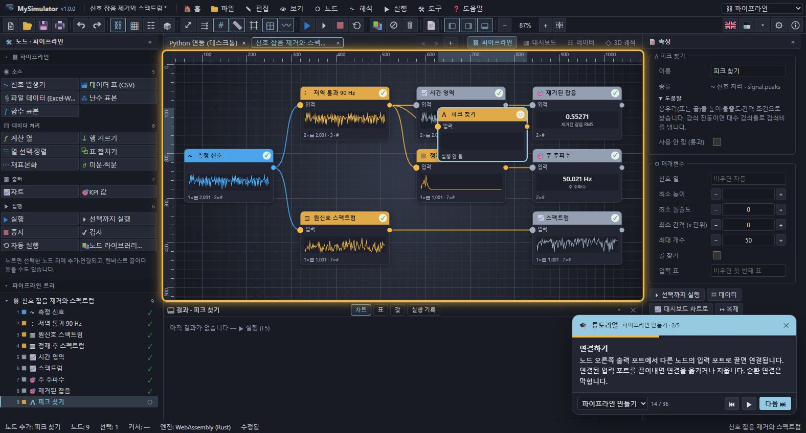
15. 매개변수와 프리셋
속성 패널에서 매개변수를 고칩니다. 숫자 칸은 식(2*pi, 1e-3)도 받습니다. ODE · 전달함수 · 몬테카를로 · 최적화 노드는 프리셋으로 대표 모델을 한 번에 채웁니다.
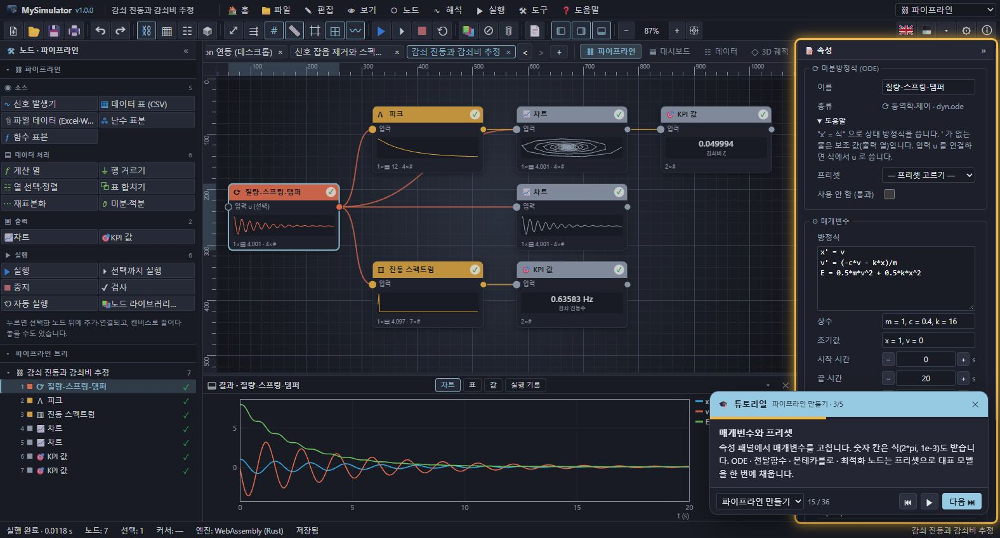
16. 노드 라이브러리
노드 54종을 분야별로 보고 검색합니다. 오른쪽에 설명, 입력, 매개변수와 기본값이 있습니다.
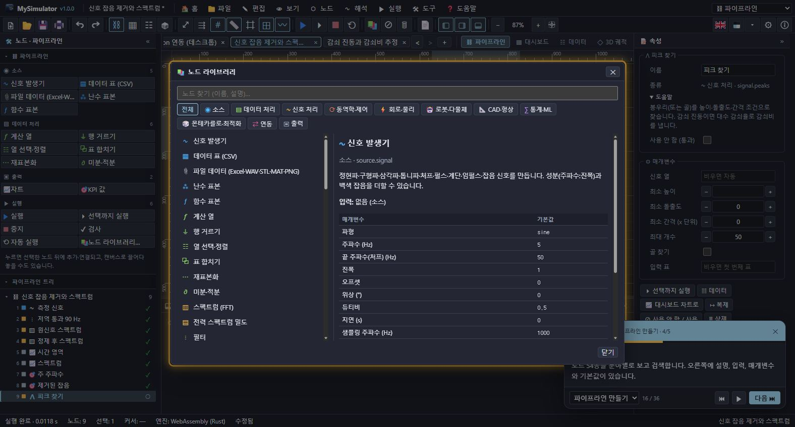
17. 정리하기
노드를 끌어 옮기고, 빈 곳을 끌면 (손 모양) 화면이 움직이며, Shift·Ctrl 을 누른 채 빈 곳을 끌면 여러 개를 고릅니다. 가운데·오른쪽 단추로도 화면을 옮깁니다. 자동 정렬은 연결 순서대로 열을 맞춥니다.
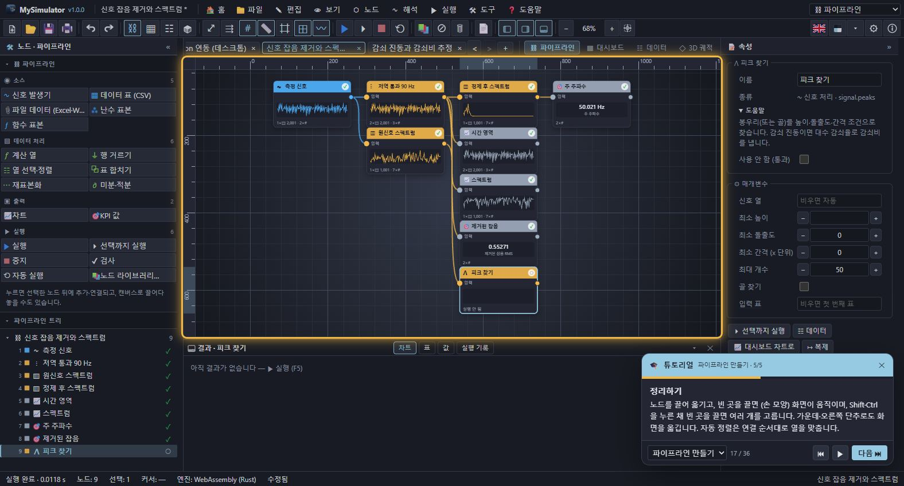
실행과 결과
18. 실행
▶ 실행(F5)은 파이프라인 전체를, ⏵ 선택까지 실행은 선택한 노드와 그 입력만 계산합니다. 데스크톱은 네이티브 Rust, 웹은 WebAssembly 엔진이 같은 결과를 냅니다.
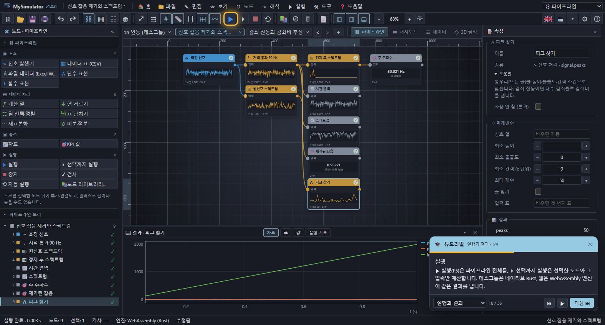
19. 바뀐 노드
매개변수를 바꾸면 그 노드와 뒤의 노드가 ◔ 로 표시됩니다. 자동 실행을 켜면 바꿀 때마다 다시 계산합니다.
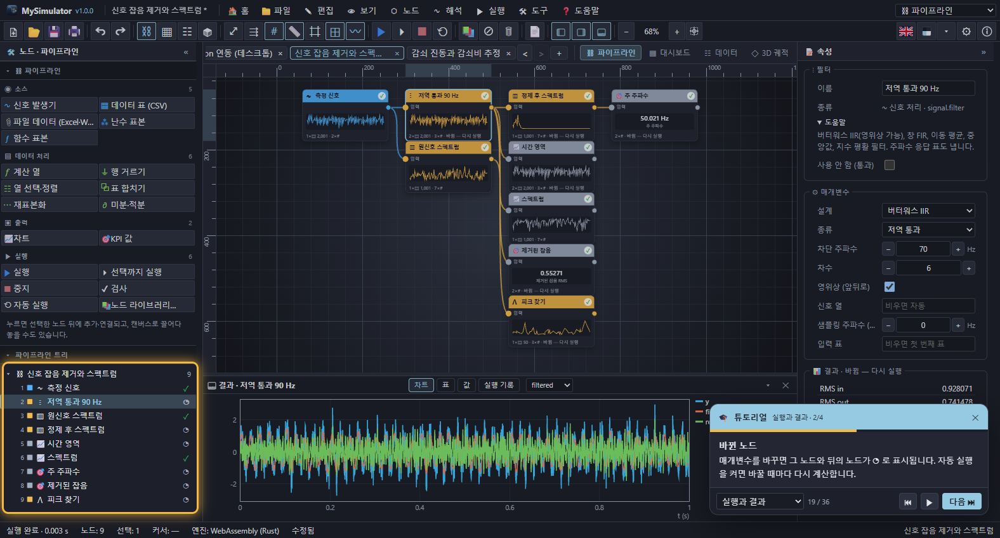
20. 데이터 보기
데이터 보기는 선택한 노드의 결과를 크게 보입니다: 차트, 결과 값, 표(최대 1000행). CSV · JSON 으로 내보내거나 표를 복사합니다.
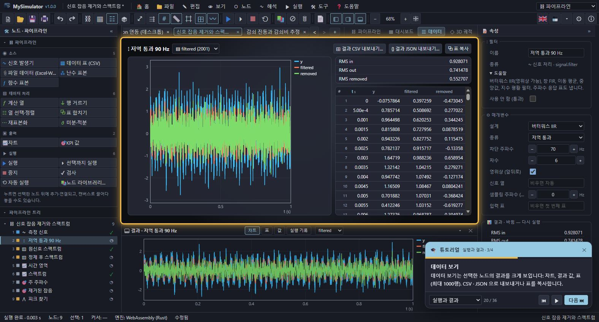
21. 오류 확인
실패한 노드는 빨간 테두리와 ✕ 로 보이고, 뒤의 노드는 건너뜁니다. 실행 기록 탭에 노드별 시간·경고·오류가 있습니다.
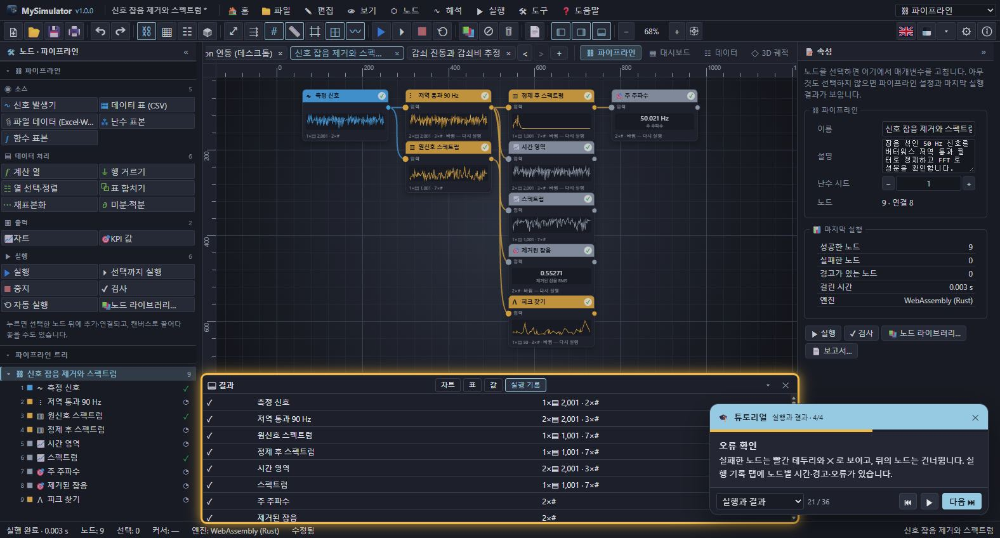
대시보드와 보고서
22. 대시보드
차트와 KPI 노드가 한 화면에 모입니다. KPI 는 범위를 벗어나면 경보 색이 됩니다. 차트 노드의 "대시보드 폭" 으로 크기를 정합니다.
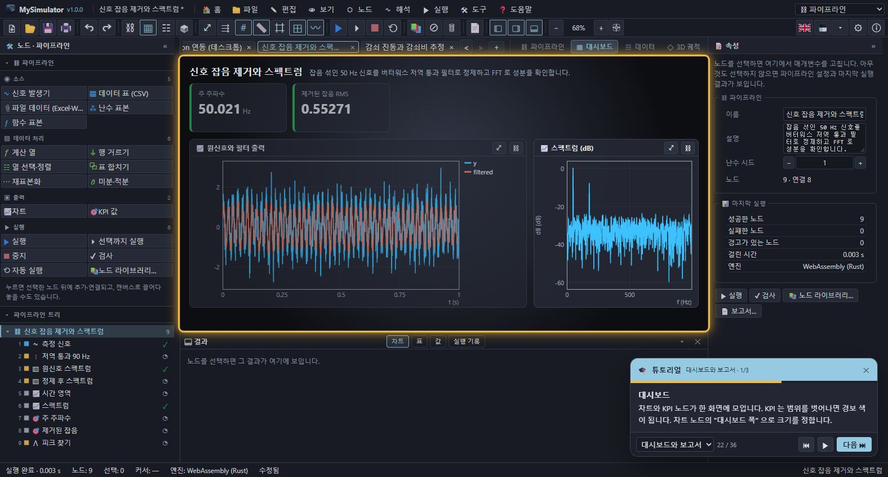
23. 보고서와 인쇄
보고서는 파이프라인 구성, 노드별 결과 값·차트, 경고와 오류를 모읍니다. HTML 로 저장하거나 인쇄합니다.
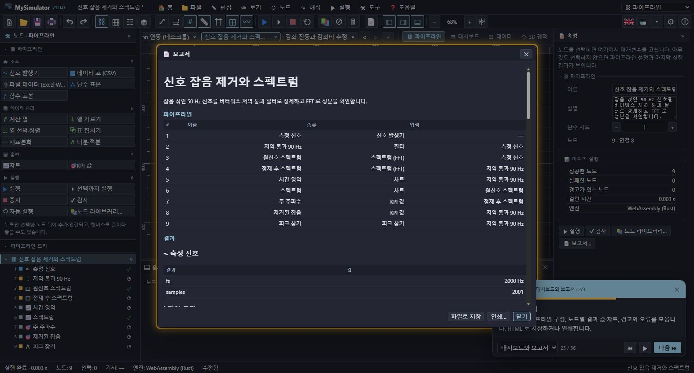
24. 3D 궤적
3D 보기는 세 열을 3차원 곡선이나 점으로 그립니다 (로렌츠 끌개, 위상 공간, 군집). 끌어서 돌리고 휠로 확대합니다.
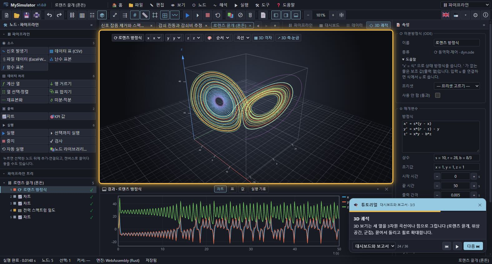
해석 분야
25. 신호 처리
FFT · PSD · 필터(버터워스, FIR, 이동 평균, 중앙값) · 스펙트로그램 · 피크 · 상관 · 포락선 노드로 측정 신호를 분석합니다.
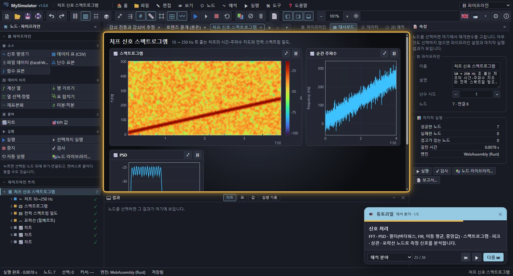
26. 동역학과 제어
ODE 를 식으로 쓰고, 전달함수 응답·보드 선도·PID 루프·상태공간 모델로 제어계를 설계합니다. 보드 노드는 이득·위상 여유와 지글러-니콜스 값을 냅니다.
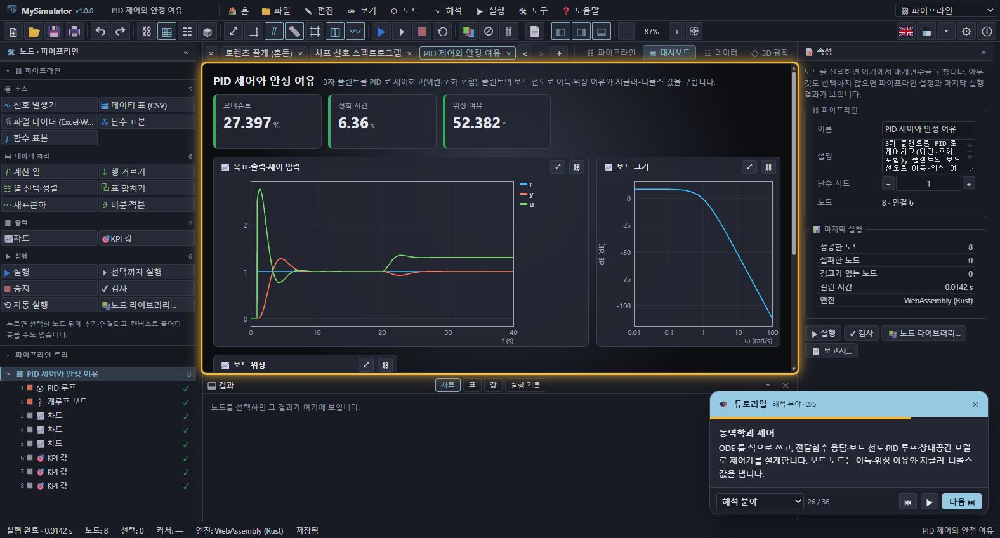
27. 통계와 머신러닝
기술 통계, 히스토그램, 회귀, 상관 행렬, k-평균, PCA, 신경망(MLP) 노드. 신경망은 학습·검증 손실과 예측 지도를 냅니다.
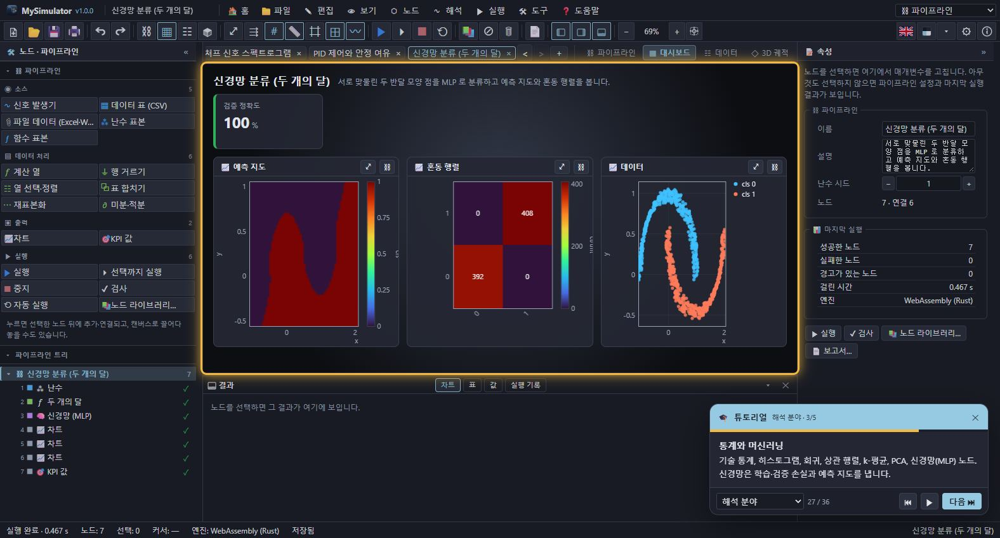
28. 몬테카를로와 최적화
분포로 불확실성을 전파하고(민감도·불량 확률), 확률 과정을 만들고, 목적 함수를 최소화하고, 모델식을 데이터에 맞춥니다.
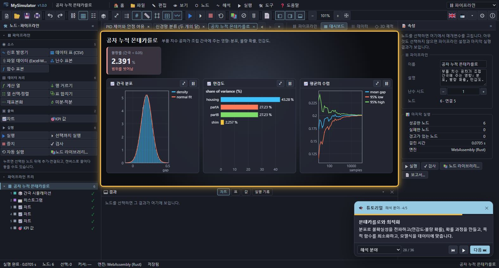
29. 매개변수 스윕
스윕 노드는 다른 노드의 매개변수를 바꿔 가며 파이프라인을 다시 돌리고 결과 값을 모읍니다. 두 매개변수면 지도가 됩니다.
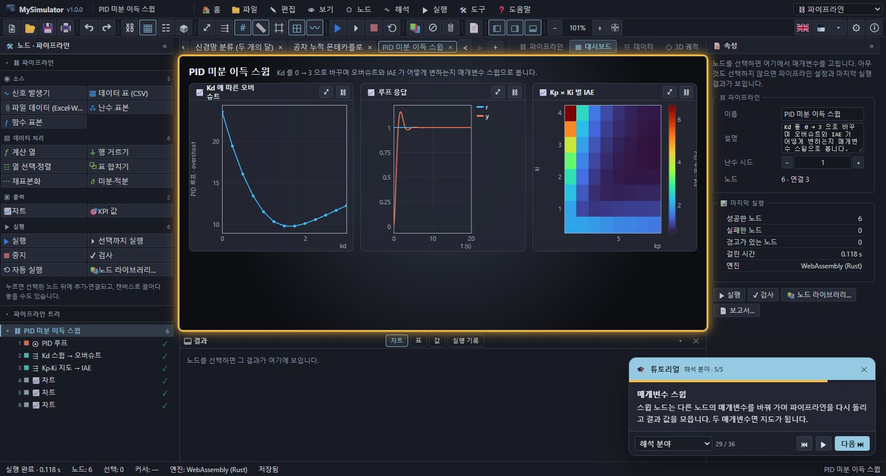
자동화와 연동
30. Python 과 외부 프로그램
데스크톱 앱에서는 Python 스크립트 노드와 외부 프로그램 노드로 NumPy · SciPy · PyTorch 나 상용 솔버의 배치 실행을 파이프라인에 넣습니다. 실행 전에 한 번 허락을 묻습니다.
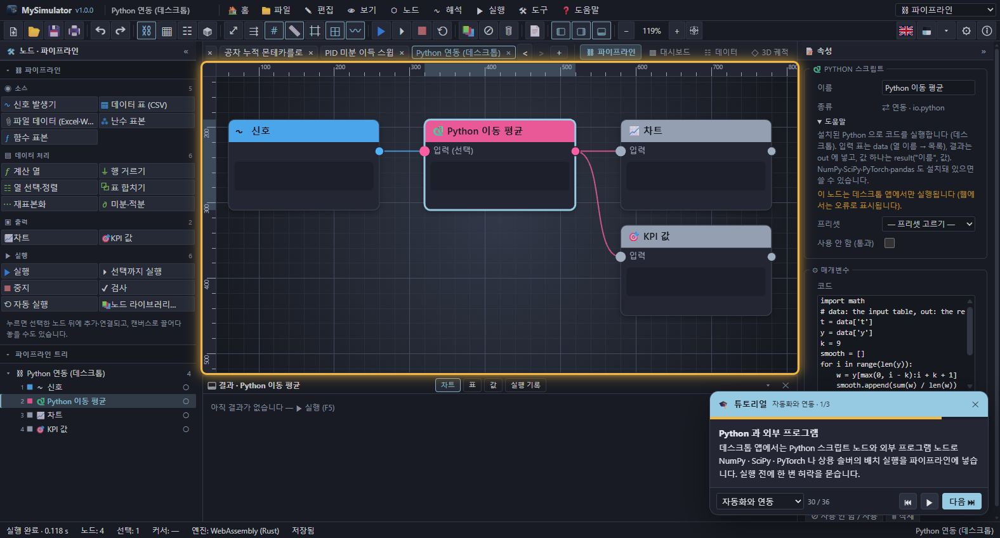
31. 배치 실행 (CLI)
MySimulator --batch 파이프라인.mysim --set 노드.매개변수=값 으로 창 없이 실행하고 결과 CSV · JSON · PNG 를 씁니다. 스크립트나 CI 에서 씁니다.
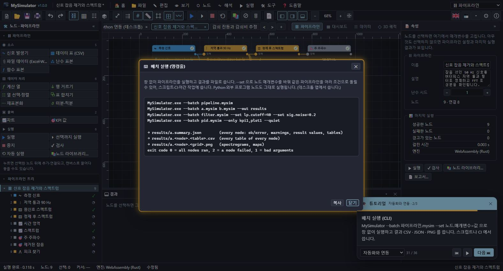
32. 파일
파이프라인은 .mysim (JSON) 파일입니다. CSV · TSV · JSON 데이터를 끌어다 놓으면 데이터 표 노드가 됩니다.
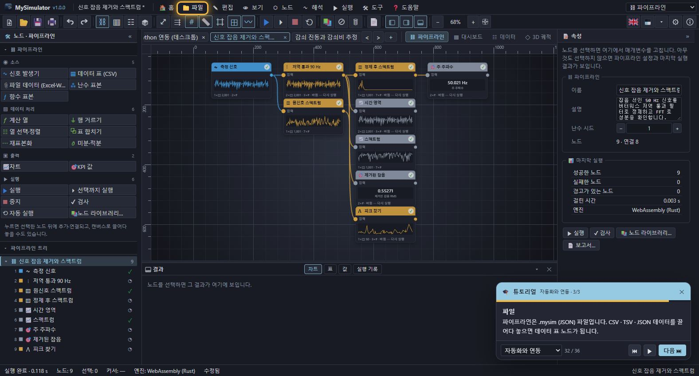
꾸미기
33. 테마
테마 단추로 같은 계열의 다음 테마로, ▾ 로 다크 20 · 라이트 20 테마 목록을 엽니다. 직접 색을 정할 수도 있습니다.
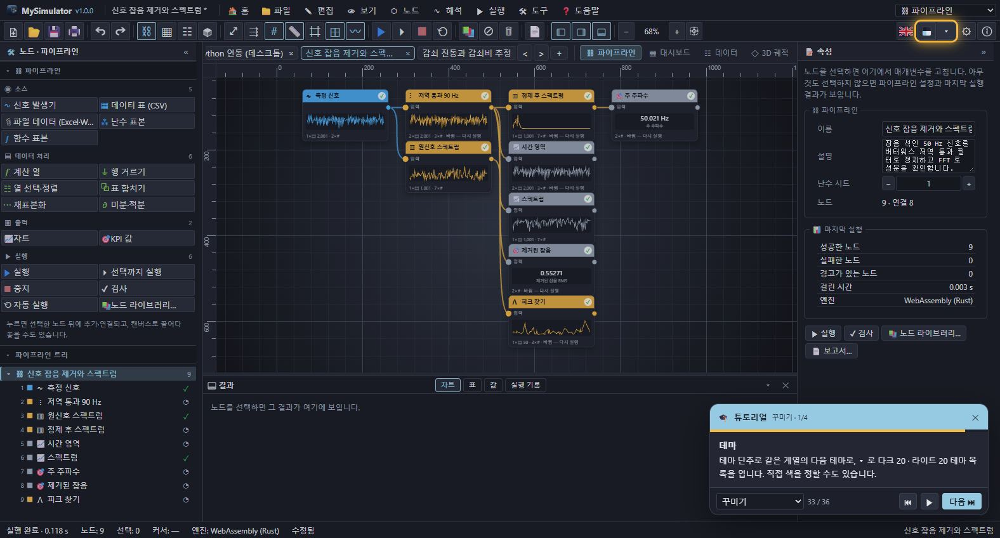
34. 언어
국기 단추로 한국어와 영어를 바꿉니다. 메뉴, 노드 이름, 도움말, 예제가 모두 바뀝니다.
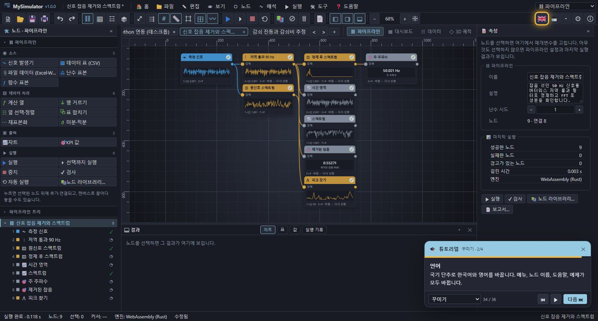
35. 환경 설정
글꼴, 편집 화면(격자, 맞춤, 미리보기), 색 지도, 패널, 시작 화면, 최근 파일을 정합니다.
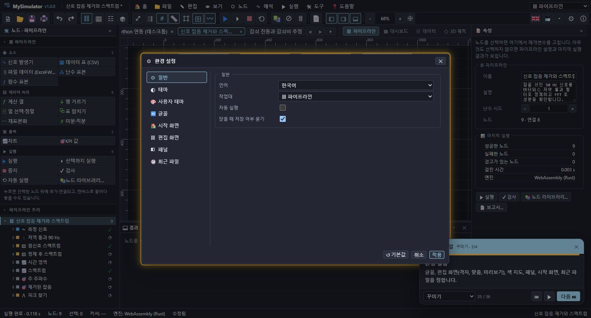
36. 끝
튜토리얼을 마쳤습니다! 바뀐 설정은 되돌리고 튜토리얼 탭은 닫습니다. 🏠 시작 화면이나 도움말 메뉴에서 언제든 다시 볼 수 있고, 사용 설명서에 더 자세한 설명이 있습니다.
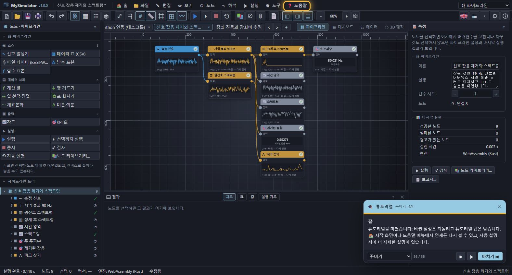